Assessing Gain and Phase Margins
This demo illustrates the concept of stability margins and its connection with closed-loop response characteristics.
Contents
Stability of a Feedback Loop
Stability generally means that all internal signals remain bounded. This is a standard requirement for control systems to avoid loss of control and damage to equipment. For linear feedback systems, stability can be assessed by looking at the poles of the closed-loop transfer function. Consider for example the SISO feedback loop:
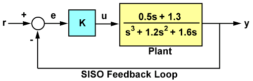
Figure 1: SISO Feedback Loop.
For a unit loop gain k, you can compute the closed-loop transfer function T using:
G = tf([.5 1.3],[1 1.2 1.6 0]); T = feedback(G,1);
To obtain the poles of T, type
pole(T)
ans = -0.2305 + 1.3062i -0.2305 - 1.3062i -0.7389
The feedback loop for k=1 is stable since all poles have negative real parts.
How Stable is Stable?
Checking the closed-loop poles gives us a binary assessment of stability. In practice, it is more useful to know how robust (or fragile) stability is. One indication of robustness is how much the loop gain can change before stability is lost. You can use the root locus plot to estimate the range of k values for which the loop is stable:
rlocus(G)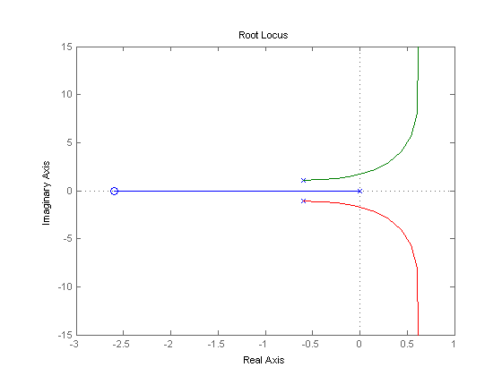
Clicking on the point where the locus intersects the y axis reveals that this feedback loop is stable for
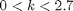
This range shows that with k=1, the loop gain can increase 270% before you lose stability.
Gain and Phase Margins
Changes in the loop gain are only one aspect of robust stability. In general, imperfect plant modeling means that both gain and phase are not known exactly. Because modeling errors are most damaging near the gain crossover frequency (frequency where open-loop gain is 0dB), it also matters how much phase variation can be tolerated at this frequency.
The phase margin measures how much phase variation is needed at the gain crossover frequency to lose stability. Similarly, the gain margin measures what relative gain variation is needed at the gain crossover frequency to lose stability. Together, these two numbers give an estimate of the "safety margin" for closed-loop stability. The smaller the stability margins, the more fragile stability is.
You can display the gain and phase margins on a Bode plot as follows. First create the plot:
bode(G), grid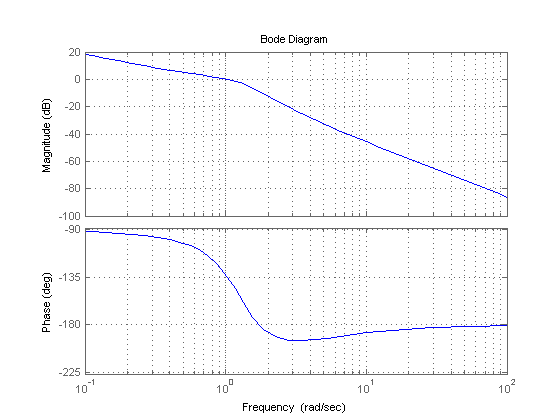
Then, right-click on the plot and select the Characteristics -> Minimum Stability Margins submenu. Finally, click on the blue dot markers. The resulting plot is shown below:
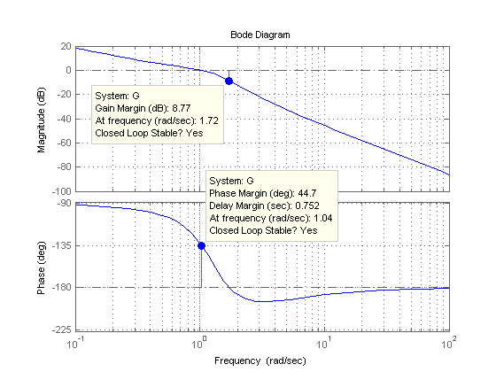
This indicates a gain margin of about 9 dB and a phase margin of about 45 degrees. The corresponding closed-loop step response exhibits about 20% overshoot and some oscillations.
step(T), title('Closed-loop response for k=1')
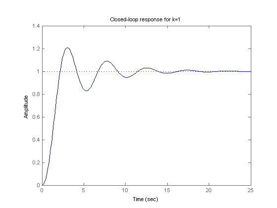 If we increase the gain to k=2, the stability margins are reduced to
[Gm,Pm] = margin(2*G); GmdB = 20*log10(Gm) % gain margin in dB Pm % phase margin in degrees
GmdB =
2.7471
Pm =
8.6328
and the closed-loop response has poorly damped oscillations, a sign of near instability.
step(feedback(2*G,1)), title('Closed-loop response for k=2')
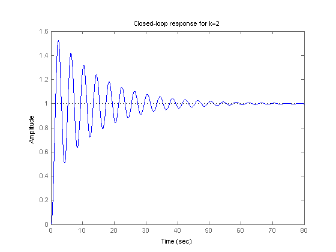 Systems with Multiple Gain or Phase Crossings
Some systems have multiple gain crossover or phase crossover frequencies, which leads to multiple gain or phase margin values. For example, consider the feedback loop
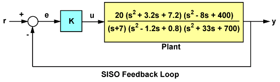
Figure 2: Feedback Loop with Multiple Phase Crossovers
The closed-loop response for k=1 is stable:
G = tf(20,[1 7]) * tf([1 3.2 7.2],[1 -1.2 0.8]) * tf([1 -8 400],[1 33 700]);
T = feedback(G,1);
step(T), title('Closed-loop response for k=1')
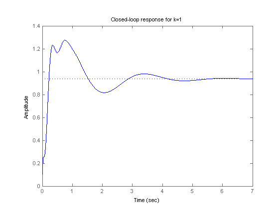 To assess how robustly stable this loop is, plot its Bode response:
bode(G), grid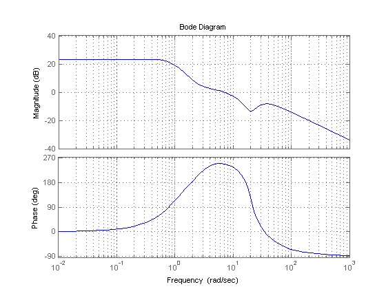
Then, right-click on the plot and select the Characteristics -> All Stability Margins submenu to show all the crossover frequencies and associated stability margins. The resulting plot is shown below.
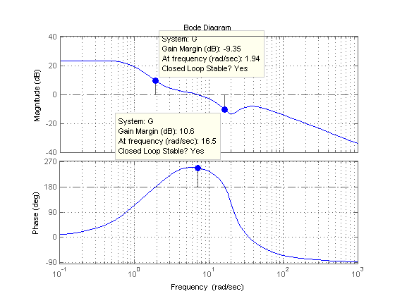
Note that there are two 180 deg phase crossings with corresponding gain margins of -9.35dB and +10.6dB. Negative gain margins indicate that stability is lost by decreasing the gain, while positive gain margins indicate that stability is lost by increasing the gain. This is confirmed by plotting the closed-loop step response for a plus/minus 6dB gain variation about k=1:
k1 = 2; T1 = feedback(G*k1,1); k2 = 1/2; T2 = feedback(G*k2,1); step(T,'b',T1,'r',T2,'g',12), legend('k = 1','k = 2','k = 0.5')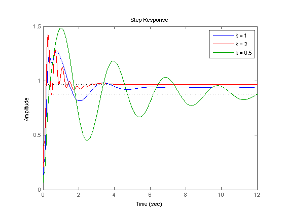
The plot shows increased oscillations for both smaller and larger gain values.
You can use the command allmargin to compute all stability margins. Note that gain margins are expressed as gain ratios, not dB. Use mag2db to convert the values to dB.
m = allmargin(G) GainMargins_dB = mag2db(m.GainMargin)
m =
GainMargin: [0.3408 3.3920]
GMFrequency: [1.9421 16.4807]
PhaseMargin: 68.1178
PMFrequency: 7.0762
DelayMargin: 0.1680
DMFrequency: 7.0762
Stable: 1
GainMargins_dB =
-9.3510 10.6091
Interactive GUI
To gain additional insight into the connection between stability margins and closed-loop responses, click on the link below to launch an interactive GUI for tuning the loop gain k and seeing the effect on margins and closed-loop responses.
Open the Gain and Phase Margin GUI
margin_gui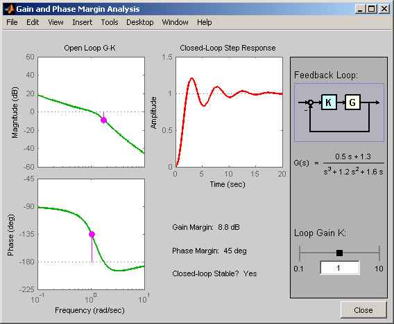